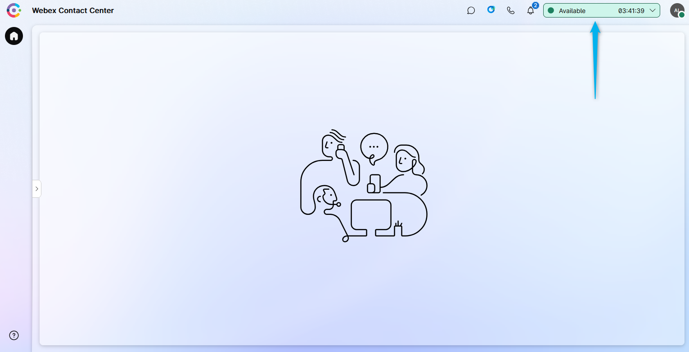

Mission 2: Routing facilitation
Story
The primary objective of this new feature is to enhance nodes activities to include a dynamic variable-based selection option to make your flow smaller and simpler to adjust. You will learn how to use Dynamic Variables in multiple nodes including GoTo, Business Hours, Queue and other nodes.
Call Flow Overview
- When call arrives fetch the data from MockAPI based on your Dialed Number
- Write the data into respective preconfigured flow variables. These variables are being used in all consequent nodes.
- Business Hours entity configured to cover EMEA timezone. Call should go through Working Hours exit edge in normal behavior.
- Play Message nodes have been configured to play messages received from API call
Mission Details
Your mission is to:
- Create a new flow by using pre-defined flow template.
- Request the data from external database and parse it into flow variables which are coming with a flow template.
- You do not need to create Business Hours, Channels and additional Flows as they have been preconfigured for you.
Good to Know [Optional]
We are going to imitate a real API server by providing realistic responses to requests. For that we chose Server MockAPI.For more information of how you can use MockAPI please watch these Vidcasts:
Steps
-
Switch to Control Hub, then navigate to Flows, click on Manage Flows dropdown list and select Create Flows.
-
New Tab will be opened. Navigate to Flow Templates.
-
Choose Dynamic Variable Support and click Next. You can open View Details and to see observe flow structure and read flow description.
-
Name you flow as DynamicVariables_Your_Attendee_ID. Then click on Create Flow.
-
Observe preconfigured nodes and flow variables. If you have questions please reach out to lab proctor.
- FetchFlowSettings node is used to access external database over API and parse the result by writing response result into respective Flow Variables which have been preconfigured for you already.
- SetVariable_mwn node writes complete API response into debug variable so you could see the complete API call result in Debug tool. It's been taken from FetchFlowSettings.httpResponseBody output variable of FetchFlowSettings node
- All Play Message and Play Music nodes have been preconfigured to play TTS messages taken from respective API response
- BusinessHours_os2 node set to bussinessHours variable which is your business hour entity Your_Attendee_ID_Bussiness_Hours
- QueueContact_a62 node set to queue variable which is your queue entity Your_Attendee_ID_Queue
- Some GoTo nodes are configured to use variables and some have static values. We will adjust them while going through further steps.
-
Select FetchFlowSettings HTTP Node and paste the following GET request in Request URL field by replacing a templated one:
https://674481b1b4e2e04abea27c6e.mockapi.io/flowdesigner/Lab/DynVars?dn={{NewPhoneContact.DNIS | slice(2) }}
-
In the same node, under Parsing Settings add [0] after $ sign to the path expression of each output variable. This needs to be done due to output structure of API response.
Test your API Source [Optional]
-
Test your API resource. https://674481b1b4e2e04abea27c6e.mockapi.io/flowdesigner/Lab/DynVars?dn={DNIS}
-
Replace DNIS with the provided DNIS number stripping +1. [For example:] If your number +14694096861, then your GET Query should be https://674481b1b4e2e04abea27c6e.mockapi.io/flowdesigner/Lab/DynVars?dn=4694096861
-
Open Chrome browser, paste your Get query URL into the Browser address line and press Enter. You should get the JSON response like this:

-
Open the new browser tab and navigate to JSONPath Online Evaluator
-
Copy the JSON response (including square brackets) you obtained above and paste it into Document window of JSONPath Online Evaluator.
-
In JSONPath box copy and paste one of the path expression from FetchFlowSettings to verify your results. For example, $[0].businessHours

-
-
Open a Queue Node and set Fallback Queue to CCBU_Fallback_Queue. That is needed to make sure the call will find an end queue in case API GET call fails.
-
Open GoTo_x19 node and set:
-
Destination Type: Flow
-
Static Flow
-
Flow: CLTS_ErrorHandling_Flow
Choose Version Label: Latest
-
-
Open GoTo_8ca and set:
-
Destination Type: Entry Point
-
Static Entry Point
-
Entry Point: CLTS_ErrorHandling_Channel
-
-
Repeat node settings in Step 9 for GoTo_uyn
-
Repeat node settings in Step 10 for GoTo_dbr
-
Validate and publish the flow:
-
Enable the Validation toggle in the bottom right corner of the flow designer window to check for any potential flow errors and recommendations.
-
If there are no Flow Errors after validation is complete, click on Publish Flow next to it.
-
In the pop-up window, ensure that the Latest label is selected in the Add Version Label(s) list, then click Publish Flow.
-
-
Switch to Control Hub and navigate to Channels under Customer Experience Section
-
Locate your Inbound Channel (you can use the search): Your_Attendee_ID_Channel
-
Select the Routing Flow: DynamicVariables_Your_Attendee_ID
-
Select the Version Label: Latest
-
Click Save in the lower right corner of the screen
-
{kind=link}
{kind=link}
{kind=link}
{kind=link}
{kind=link}
Testing
-
Your Agent Desktop session should still be active. If it is not, launch Desktop using the cross-launch link in Control Hub.
See how to run Agent Desktop from the Control Hub
- Select Team Your_Attendee_ID_Team. Click Submit. Allow browser to access Microphone by clicking Allow on ever visit.
-
On your Agent Desktop, make your agent Available and you're ready to make a call.

-
Make a call to test you flow. If everything configured as per instructions you should hear a welcome1 message that is a value of $[0].welcomePrompt1 and then $[0].welcomePrompt2. Finally, the call should land on the $[0].queue
{kind=link}
{kind=link}
[Optional] Test other variables
-
You can do the same trick we did in Mission 2 of Core Track and use Override option to change the logic. Overrides as well as Business hours have been preconfigured for you. Now we need to apply it on your Your_Attendee_ID_Bussiness_Hours entity. Open Your_Attendee_ID_Bussiness_Hours in Control Hub, scroll down to Additional Settings and select Overrides_Hours from Override dropdown list. Then click Save.
Note
Override Hours entity overwrites Working Hours and set to duration of current Cisco Live lab
-
Make a new call to be redirected to flow $[0].goToFlow where the following message can be heard: "Thanks you for calling. You are now on Error Handling flow and will be redirected to Global Support line in a moment. Goodbye."
-
Now we need to revert the configuration we made in Step 1. Open Your_Attendee_ID_Bussiness_Hours in Control Hub, scroll down to Additional Settings and select None from Override dropdown list. Then click Save.
{kind=link}
{kind=link}
Congratulations, you have succesfully completed Routing Facilitation mission! 🎉🎉